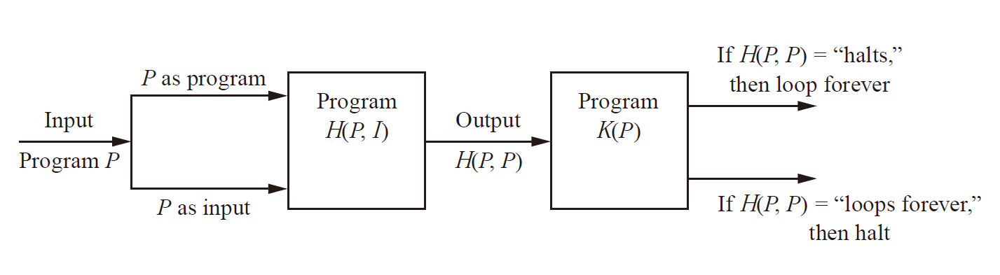
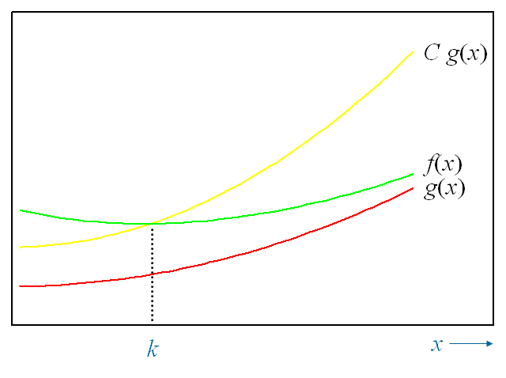
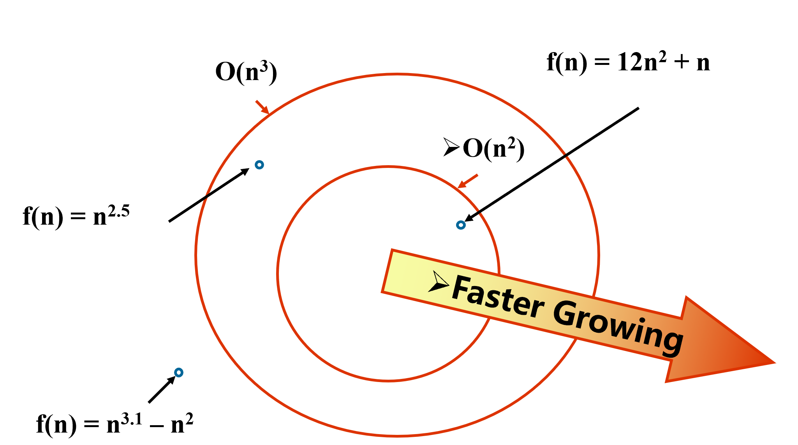
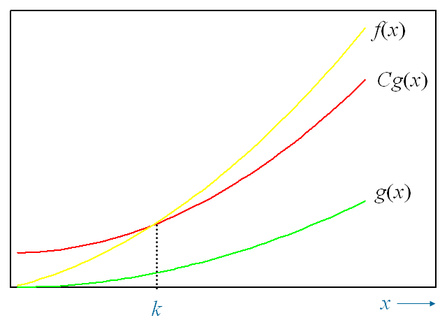

<!DOCTYPE HTML>
<html lang="en" >
    <head>
        <meta charset="UTF-8">
        <meta content="text/html; charset=utf-8" http-equiv="Content-Type">
        <title>01 Algorithms · Discrete Mathematics Explained in Detail</title>
        <meta http-equiv="X-UA-Compatible" content="IE=edge" />
        <meta name="description" content="">
        <meta name="generator" content="GitBook 3.2.3">
        <meta name="author" content="NCJ">
        
        
    
    <link rel="stylesheet" href="../gitbook/style.css">

    
            
                
                <link rel="stylesheet" href="../gitbook/gitbook-plugin-splitter/splitter.css">
                
            
                
                <link rel="stylesheet" href="../gitbook/gitbook-plugin-expandable-chapters-small/expandable-chapters-small.css">
                
            
                
                <link rel="stylesheet" href="../gitbook/gitbook-plugin-anchors/plugin.css">
                
            
                
                <link rel="stylesheet" href="../gitbook/gitbook-plugin-donate/plugin.css">
                
            
                
                <link rel="stylesheet" href="../gitbook/gitbook-plugin-anchor-navigation-ex/style/plugin.css">
                
            
                
                <link rel="stylesheet" href="../gitbook/gitbook-plugin-highlight/website.css">
                
            
                
                <link rel="stylesheet" href="../gitbook/gitbook-plugin-search/search.css">
                
            
                
                <link rel="stylesheet" href="../gitbook/gitbook-plugin-fontsettings/website.css">
                
            
        

    

    
        
    

        
    
    
    
    
    <meta name="HandheldFriendly" content="true"/>
    <meta name="viewport" content="width=device-width, initial-scale=1, user-scalable=no">
    <meta name="apple-mobile-web-app-capable" content="yes">
    <meta name="apple-mobile-web-app-status-bar-style" content="black">
    <link rel="apple-touch-icon-precomposed" sizes="152x152" href="../gitbook/images/apple-touch-icon-precomposed-152.png">
    <link rel="shortcut icon" href="../gitbook/images/favicon.ico" type="image/x-icon">

    
    
    <link rel="prev" href="../CH02_Basic_Structures/CH02_03_Cardinality_of_Sets.html" />
    

    
        <link rel="shortcut icon" href='../source/images/favicon.jpg' type="image/x-icon">
    
    
        <link rel="bookmark" href='../source/images/favicon.jpg' type="image/x-icon">
    
    
        <link rel="apple-touch-icon" href='../source/images/apple-touch-icon.jpg'>
    
    
        
        <link rel="apple-touch-icon" sizes="120x120" href="../source/images/apple-touch-icon.jpg">
        
        <link rel="apple-touch-icon" sizes="180x180" href="../source/images/apple-touch-icon.jpg">
        
    

    <style>
    @media only screen and (max-width: 640px) {
        .book-header .hidden-mobile {
            display: none;
        }
    }
    </style>
    <script>
        window["gitbook-plugin-github-buttons"] = {"buttons":[{"user":"iamNCJ","repo":"Discrete_Mathematics_Explained_in_Detail","type":"star","size":"small","count":true}]};
    </script>

    </head>
    <body>
        
<div class="book">
    <div class="book-summary">
        
            
<div id="book-search-input" role="search">
    <input type="text" placeholder="Type to search" />
</div>

            
                <nav role="navigation">
                


<ul class="summary">
    
    
    
        
        <li>
            <a href="https://github.com/iamNCJ/Discrete_Mathematics_Explained_in_Detail" target="_blank" class="custom-link">DM Explained in Detail</a>
        </li>
    
        
        <li>
            <a href="https://iamncj.github.io" target="_blank" class="custom-link">Personal Blog</a>
        </li>
    
    

    
    <li class="divider"></li>
    

    
        
        
    
        <li class="chapter " data-level="1.1" data-path="../">
            
                <a href="../">
            
                    
                    Introduction
            
                </a>
            

            
        </li>
    

    
        
        <li class="header">Chapter 01 Logic and Proofs</li>
        
        
    
        <li class="chapter " data-level="2.1" data-path="../CH01_Logic_and_Proofs/CH01_01_Proposition_Logic_and_Propositional_Equivalences.html">
            
                <a href="../CH01_Logic_and_Proofs/CH01_01_Proposition_Logic_and_Propositional_Equivalences.html">
            
                    
                    01 Proposition Logic and Propositional Equivalences
            
                </a>
            

            
        </li>
    
        <li class="chapter " data-level="2.2" data-path="../CH01_Logic_and_Proofs/CH01_02_Predicate_Logic_and_Nested_Quantifiers.html">
            
                <a href="../CH01_Logic_and_Proofs/CH01_02_Predicate_Logic_and_Nested_Quantifiers.html">
            
                    
                    02 Predicate Logic and Nested Quantifiers
            
                </a>
            

            
        </li>
    
        <li class="chapter " data-level="2.3" data-path="../CH01_Logic_and_Proofs/CH01_03_Normal_Form.html">
            
                <a href="../CH01_Logic_and_Proofs/CH01_03_Normal_Form.html">
            
                    
                    03 Normal Form
            
                </a>
            

            
        </li>
    
        <li class="chapter " data-level="2.4" data-path="../CH01_Logic_and_Proofs/CH01_04_Rules_of_Inference_and_Proofs.html">
            
                <a href="../CH01_Logic_and_Proofs/CH01_04_Rules_of_Inference_and_Proofs.html">
            
                    
                    04 Rules of Inference and Proofs
            
                </a>
            

            
        </li>
    

    
        
        <li class="header">Chapter 02 Basic Structures</li>
        
        
    
        <li class="chapter " data-level="3.1" data-path="../CH02_Basic_Structures/CH02_01_Set.html">
            
                <a href="../CH02_Basic_Structures/CH02_01_Set.html">
            
                    
                    01 Set
            
                </a>
            

            
        </li>
    
        <li class="chapter " data-level="3.2" data-path="../CH02_Basic_Structures/CH02_02_Function_and_Sequence.html">
            
                <a href="../CH02_Basic_Structures/CH02_02_Function_and_Sequence.html">
            
                    
                    02 Function and Sequence
            
                </a>
            

            
        </li>
    
        <li class="chapter " data-level="3.3" data-path="../CH02_Basic_Structures/CH02_03_Cardinality_of_Sets.html">
            
                <a href="../CH02_Basic_Structures/CH02_03_Cardinality_of_Sets.html">
            
                    
                    03 Cardinality of Sets
            
                </a>
            

            
        </li>
    

    
        
        <li class="header">Chapter 03 Algorithms</li>
        
        
    
        <li class="chapter active" data-level="4.1" data-path="CH03_01_Algorithms.html">
            
                <a href="CH03_01_Algorithms.html">
            
                    
                    01 Algorithms
            
                </a>
            

            
        </li>
    

    

    <li class="divider"></li>

    <li>
        <a href="https://www.gitbook.com" target="blank" class="gitbook-link">
            Published with GitBook
        </a>
    </li>
</ul>


                </nav>
            
        
    </div>

    <div class="book-body">
        
            <div class="body-inner">
                
                    

<div class="book-header" role="navigation">
    

    <!-- Title -->
    <h1>
        <i class="fa fa-circle-o-notch fa-spin"></i>
        <a href=".." >01 Algorithms</a>
    </h1>
</div>


                    <div class="page-wrapper" tabindex="-1" role="main">
                        <div class="page-inner">
                            
<div id="book-search-results">
    <div class="search-noresults">
    
                                <section class="normal markdown-section">
                                
                                <div id="anchor-navigation-ex-navbar"><i class="fa fa-navicon"></i><ul><li><span class="title-icon "></span><a href="#definition-&#x5B9A;&#x4E49;"><b>1. </b>Definition &#x5B9A;&#x4E49;</a></li><li><span class="title-icon "></span><a href="#properties-&#x5C5E;&#x6027;"><b>2. </b>Properties &#x5C5E;&#x6027;</a></li><li><span class="title-icon "></span><a href="#examples-&#x7B97;&#x6CD5;&#x4E3E;&#x4F8B;"><b>3. </b>Examples &#x7B97;&#x6CD5;&#x4E3E;&#x4F8B;</a></li><ul><li><span class="title-icon "></span><a href="#searching-algorithms-&#x67E5;&#x627E;&#x7B97;&#x6CD5;"><b>3.1. </b>Searching Algorithms &#x67E5;&#x627E;&#x7B97;&#x6CD5;</a></li><ul><li><span class="title-icon "></span><a href="#linear-search-or-sequential-search-&#x7EBF;&#x6027;&#x67E5;&#x627E;"><b>3.1.1. </b>Linear Search or sequential search &#x7EBF;&#x6027;&#x67E5;&#x627E;</a></li><li><span class="title-icon "></span><a href="#binary-search-&#x4E8C;&#x5206;&#x67E5;&#x627E;"><b>3.1.2. </b>Binary Search &#x4E8C;&#x5206;&#x67E5;&#x627E;</a></li></ul><li><span class="title-icon "></span><a href="#sorting-&#x6392;&#x5E8F;&#x7B97;&#x6CD5;"><b>3.2. </b>Sorting &#x6392;&#x5E8F;&#x7B97;&#x6CD5;</a></li><li><span class="title-icon "></span><a href="#optimization-problem-&#x6700;&#x4F18;&#x5316;&#x95EE;&#x9898;"><b>3.3. </b>Optimization problem &#x6700;&#x4F18;&#x5316;&#x95EE;&#x9898;</a></li><ul><li><span class="title-icon "></span><a href="#greedy-algorithm-&#x8D2A;&#x5FC3;&#x7B97;&#x6CD5;"><b>3.3.1. </b>Greedy Algorithm &#x8D2A;&#x5FC3;&#x7B97;&#x6CD5;</a></li></ul></ul><li><span class="title-icon "></span><a href="#halting-problem-&#x505C;&#x673A;&#x95EE;&#x9898;"><b>4. </b>Halting Problem &#x505C;&#x673A;&#x95EE;&#x9898;</a></li><li><span class="title-icon "></span><a href="#the-growth-of-functions-&#x51FD;&#x6570;&#x7684;&#x589E;&#x957F;"><b>5. </b>The Growth of Functions &#x51FD;&#x6570;&#x7684;&#x589E;&#x957F;</a></li><ul><li><span class="title-icon "></span><a href="#asymptotic-running-time-&#x6E10;&#x8FDB;&#x8FD0;&#x884C;&#x65F6;&#x95F4;"><b>5.1. </b>Asymptotic Running Time &#x6E10;&#x8FDB;&#x8FD0;&#x884C;&#x65F6;&#x95F4;</a></li><li><span class="title-icon "></span><a href="#big-o-notation-&#x5927;o&#x8BB0;&#x53F7;"><b>5.2. </b>Big-O Notation &#x5927;O&#x8BB0;&#x53F7;</a></li><ul><li><span class="title-icon "></span><a href="#some-important-big-o-results"><b>5.2.1. </b>Some Important Big-O Results</a></li></ul><li><span class="title-icon "></span><a href="#growth-of-combinations-of-functions"><b>5.3. </b>Growth of Combinations of Functions</a></li><ul><li><span class="title-icon "></span><a href="#addition-of-functions"><b>5.3.1. </b>Addition of functions</a></li><li><span class="title-icon "></span><a href="#multiplication-of-functions"><b>5.3.2. </b>Multiplication of functions</a></li></ul><li><span class="title-icon "></span><a href="#big-omega-and-big-theta-notation"><b>5.4. </b>Big-Omega and Big-Theta Notation</a></li></ul><li><span class="title-icon "></span><a href="#complexity-of-algorithms-&#x7B97;&#x6CD5;&#x590D;&#x6742;&#x5EA6;"><b>6. </b>Complexity of Algorithms &#x7B97;&#x6CD5;&#x590D;&#x6742;&#x5EA6;</a></li><ul><li><span class="title-icon "></span><a href="#space-complexity-&#x7A7A;&#x95F4;&#x590D;&#x6742;&#x5EA6;"><b>6.1. </b>Space Complexity &#x7A7A;&#x95F4;&#x590D;&#x6742;&#x5EA6;</a></li><li><span class="title-icon "></span><a href="#time-complexity-&#x65F6;&#x95F4;&#x590D;&#x6742;&#x5EA6;"><b>6.2. </b>Time Complexity &#x65F6;&#x95F4;&#x590D;&#x6742;&#x5EA6;</a></li><li><span class="title-icon "></span><a href="#different-types-of-analysis-&#x590D;&#x6742;&#x5EA6;&#x5206;&#x6790;"><b>6.3. </b>Different types of analysis &#x590D;&#x6742;&#x5EA6;&#x5206;&#x6790;</a></li><ul><li><span class="title-icon "></span><a href="#worst-case-analysis-&#x6700;&#x574F;&#x60C5;&#x5F62;"><b>6.3.1. </b>Worst-case analysis &#x6700;&#x574F;&#x60C5;&#x5F62;</a></li><li><span class="title-icon "></span><a href="#best-case-analysis-&#x6700;&#x597D;&#x60C5;&#x5F62;"><b>6.3.2. </b>Best-case analysis &#x6700;&#x597D;&#x60C5;&#x5F62;</a></li><li><span class="title-icon "></span><a href="#average-case-analysis-&#x5E73;&#x5747;&#x60C5;&#x5F62;"><b>6.3.3. </b>Average-case analysis &#x5E73;&#x5747;&#x60C5;&#x5F62;</a></li></ul></ul><li><span class="title-icon "></span><a href="#understanding-the-complexity-of-algorithm"><b>7. </b>Understanding the complexity of algorithm</a></li><ul><li><span class="title-icon "></span><a href="#pnp"><b>7.1. </b>P&amp;NP</a></li></ul></ul></div><a href="#definition-&#x5B9A;&#x4E49;" id="anchorNavigationExGoTop"><i class="fa fa-arrow-up"></i></a><font size="6"> Chaptcer 03 Algorithms &#x7B97;&#x6CD5;</font>

<p>covering 3.1~3.3</p>
<hr>
<h1 id="definition-&#x5B9A;&#x4E49;"><a name="definition-&#x5B9A;&#x4E49;" class="anchor-navigation-ex-anchor" href="#definition-&#x5B9A;&#x4E49;"><i class="fa fa-link" aria-hidden="true"></i></a>1. Definition &#x5B9A;&#x4E49;</h1>
<p>An <strong>algorithm</strong> is a <strong>finite</strong> set of precise instructions for performing a computation or for solving a problem.</p>
<p><strong>Pseudocode</strong>&#xFF08;&#x4F2A;&#x4EE3;&#x7801;&#xFF09;: Instructions given in a generic language similar to a computer language such as C++ or Pascal.</p>
<p>e.g. A pseudocode description of the algorithm for finding the maximum element in a finite sequence follows.</p>
<pre><code class="lang-pseudocode">procedure  max(a1, a2, ..., an :integers)
max := a1
for i := 2 to n
    if max &lt; ai then max:= ai
return max{max is the largest element}
</code></pre>
<h1 id="properties-&#x5C5E;&#x6027;"><a name="properties-&#x5C5E;&#x6027;" class="anchor-navigation-ex-anchor" href="#properties-&#x5C5E;&#x6027;"><i class="fa fa-link" aria-hidden="true"></i></a>2. Properties &#x5C5E;&#x6027;</h1>
<ul>
<li><p>Input : An algorithm has input values from a specified set.</p>
</li>
<li><p>Output : From each set of input values, an algorithm produces output values from a specified set.</p>
</li>
<li><p>Definiteness : The steps of an algorithm must be defined precisely.</p>
</li>
<li><p>Correctness : An algorithm should produce the correct output values for each set of  input values.</p>
</li>
<li><p>Finiteness : An algorithm should produce the desired output after a finite number of steps for any input in the set.</p>
</li>
<li><p>Effectiveness: Each step of an algorithm must be executed exactly and in a finite amount of time.</p>
</li>
<li><p>Generality : The procedure should be applicable for all problems of the desired form, not just for a particular set of input values.</p>
</li>
</ul>
<h1 id="examples-&#x7B97;&#x6CD5;&#x4E3E;&#x4F8B;"><a name="examples-&#x7B97;&#x6CD5;&#x4E3E;&#x4F8B;" class="anchor-navigation-ex-anchor" href="#examples-&#x7B97;&#x6CD5;&#x4E3E;&#x4F8B;"><i class="fa fa-link" aria-hidden="true"></i></a>3. Examples &#x7B97;&#x6CD5;&#x4E3E;&#x4F8B;</h1>
<h2 id="searching-algorithms-&#x67E5;&#x627E;&#x7B97;&#x6CD5;"><a name="searching-algorithms-&#x67E5;&#x627E;&#x7B97;&#x6CD5;" class="anchor-navigation-ex-anchor" href="#searching-algorithms-&#x67E5;&#x627E;&#x7B97;&#x6CD5;"><i class="fa fa-link" aria-hidden="true"></i></a>3.1. Searching Algorithms &#x67E5;&#x627E;&#x7B97;&#x6CD5;</h2>
<h3 id="linear-search-or-sequential-search-&#x7EBF;&#x6027;&#x67E5;&#x627E;"><a name="linear-search-or-sequential-search-&#x7EBF;&#x6027;&#x67E5;&#x627E;" class="anchor-navigation-ex-anchor" href="#linear-search-or-sequential-search-&#x7EBF;&#x6027;&#x67E5;&#x627E;"><i class="fa fa-link" aria-hidden="true"></i></a>3.1.1. Linear Search or sequential search &#x7EBF;&#x6027;&#x67E5;&#x627E;</h3>
<h3 id="binary-search-&#x4E8C;&#x5206;&#x67E5;&#x627E;"><a name="binary-search-&#x4E8C;&#x5206;&#x67E5;&#x627E;" class="anchor-navigation-ex-anchor" href="#binary-search-&#x4E8C;&#x5206;&#x67E5;&#x627E;"><i class="fa fa-link" aria-hidden="true"></i></a>3.1.2. Binary Search &#x4E8C;&#x5206;&#x67E5;&#x627E;</h3>
<h2 id="sorting-&#x6392;&#x5E8F;&#x7B97;&#x6CD5;"><a name="sorting-&#x6392;&#x5E8F;&#x7B97;&#x6CD5;" class="anchor-navigation-ex-anchor" href="#sorting-&#x6392;&#x5E8F;&#x7B97;&#x6CD5;"><i class="fa fa-link" aria-hidden="true"></i></a>3.2. Sorting &#x6392;&#x5E8F;&#x7B97;&#x6CD5;</h2>
<h2 id="optimization-problem-&#x6700;&#x4F18;&#x5316;&#x95EE;&#x9898;"><a name="optimization-problem-&#x6700;&#x4F18;&#x5316;&#x95EE;&#x9898;" class="anchor-navigation-ex-anchor" href="#optimization-problem-&#x6700;&#x4F18;&#x5316;&#x95EE;&#x9898;"><i class="fa fa-link" aria-hidden="true"></i></a>3.3. Optimization problem &#x6700;&#x4F18;&#x5316;&#x95EE;&#x9898;</h2>
<h3 id="greedy-algorithm-&#x8D2A;&#x5FC3;&#x7B97;&#x6CD5;"><a name="greedy-algorithm-&#x8D2A;&#x5FC3;&#x7B97;&#x6CD5;" class="anchor-navigation-ex-anchor" href="#greedy-algorithm-&#x8D2A;&#x5FC3;&#x7B97;&#x6CD5;"><i class="fa fa-link" aria-hidden="true"></i></a>3.3.1. Greedy Algorithm &#x8D2A;&#x5FC3;&#x7B97;&#x6CD5;</h3>
<p>Algorithms that make what seems to be &#x201C;best&#x201D; choice at each step</p>
<h1 id="halting-problem-&#x505C;&#x673A;&#x95EE;&#x9898;"><a name="halting-problem-&#x505C;&#x673A;&#x95EE;&#x9898;" class="anchor-navigation-ex-anchor" href="#halting-problem-&#x505C;&#x673A;&#x95EE;&#x9898;"><i class="fa fa-link" aria-hidden="true"></i></a>4. Halting Problem &#x505C;&#x673A;&#x95EE;&#x9898;</h1>
<p>Can we develop a procedure that takes as input a computer program along with its input and determines whether the program will eventually halt with that input.</p>
<p></p>
<h1 id="the-growth-of-functions-&#x51FD;&#x6570;&#x7684;&#x589E;&#x957F;"><a name="the-growth-of-functions-&#x51FD;&#x6570;&#x7684;&#x589E;&#x957F;" class="anchor-navigation-ex-anchor" href="#the-growth-of-functions-&#x51FD;&#x6570;&#x7684;&#x589E;&#x957F;"><i class="fa fa-link" aria-hidden="true"></i></a>5. The Growth of Functions &#x51FD;&#x6570;&#x7684;&#x589E;&#x957F;</h1>
<blockquote>
<p>Factors to be considered for choosing an algorithm</p>
<ul>
<li>Simplicity - Easy to implement and obviously correct</li>
<li>Clarity - Easy to read and to maintain</li>
<li>Extensibility - Can easily be extended to new tasks</li>
<li>Reusability - Can be adapted to different tasks</li>
<li>Efficiency - Uses time and space well (computation complexity)</li>
</ul>
</blockquote>
<h2 id="asymptotic-running-time-&#x6E10;&#x8FDB;&#x8FD0;&#x884C;&#x65F6;&#x95F4;"><a name="asymptotic-running-time-&#x6E10;&#x8FDB;&#x8FD0;&#x884C;&#x65F6;&#x95F4;" class="anchor-navigation-ex-anchor" href="#asymptotic-running-time-&#x6E10;&#x8FDB;&#x8FD0;&#x884C;&#x65F6;&#x95F4;"><i class="fa fa-link" aria-hidden="true"></i></a>5.1. Asymptotic Running Time &#x6E10;&#x8FDB;&#x8FD0;&#x884C;&#x65F6;&#x95F4;</h2>
<p>A rough measurement of the running  time of an algorithm based on the <strong>input size</strong></p>
<ul>
<li><p>Gives you the relative rate of growth but not specific time of execution</p>
</li>
<li><p>Allows for comparison of algorithms without implementation</p>
</li>
<li><p>Not hardware specific</p>
</li>
</ul>
<p><strong>Asymptotic running time</strong> : the number of operations used by the algorithm as the input size approaches infinity</p>
<h2 id="big-o-notation-&#x5927;o&#x8BB0;&#x53F7;"><a name="big-o-notation-&#x5927;o&#x8BB0;&#x53F7;" class="anchor-navigation-ex-anchor" href="#big-o-notation-&#x5927;o&#x8BB0;&#x53F7;"><i class="fa fa-link" aria-hidden="true"></i></a>5.2. Big-O Notation &#x5927;O&#x8BB0;&#x53F7;</h2>
<p>&#x201C;f(x) is O(g(x))&#x201D; if there are constants <em>C</em> and <em>k</em> such that |<em>f</em>(<em>x</em>)| &#x2264; <em>C| g</em>(<em>x</em>)| whenever <em>x</em> &gt; <em>k</em>.</p>
<p></p>
<blockquote>
<ol>
<li>Equivalent expressions: <script type="math/tex; ">f(x)=O(g(x))</script> <script type="math/tex; ">f(x)\in O(g(x))</script></li>
<li>The pair (C,k) is <strong>never</strong> unique</li>
<li>When f(x) is O(g(x)) , and h(x) is a function that has larger absolute values than g(x) does for sufficiently large values of x, it follows that f(x) is O(h(x)) </li>
</ol>
</blockquote>
<p></p>
<blockquote>
<p>If we have two standards, then two functions f(x) and g(x) that satisfy both of these big-O relationships are of the same order.</p>
<p>if a is the Big-O of b, then b grows faster.</p>
</blockquote>
<h3 id="some-important-big-o-results"><a name="some-important-big-o-results" class="anchor-navigation-ex-anchor" href="#some-important-big-o-results"><i class="fa fa-link" aria-hidden="true"></i></a>5.2.1. Some Important Big-O Results</h3>
<p>Let <script type="math/tex; ">f(x)=a_nx^n+a_{n-1}x^{n-1}+...+a_1x+a_0</script>, where <script type="math/tex; ">a_i(i=1,2,3,...)</script> are real numbers, then f(x) is <script type="math/tex; ">O(x^n)</script></p>
<p></p>
<p></p>
<h2 id="growth-of-combinations-of-functions"><a name="growth-of-combinations-of-functions" class="anchor-navigation-ex-anchor" href="#growth-of-combinations-of-functions"><i class="fa fa-link" aria-hidden="true"></i></a>5.3. Growth of Combinations of Functions</h2>
<h3 id="addition-of-functions"><a name="addition-of-functions" class="anchor-navigation-ex-anchor" href="#addition-of-functions"><i class="fa fa-link" aria-hidden="true"></i></a>5.3.1. Addition of functions</h3>
<p>If <script type="math/tex; ">f_1(x)</script> is <script type="math/tex; ">O(g_1(x))</script> and  <script type="math/tex; ">f_2(x)</script> is <script type="math/tex; ">O(g_2(x))</script>, then  <script type="math/tex; ">(f_1+f_2)(x)</script>  is  <script type="math/tex; ">O(max(g_1(x),g_2(x)))</script></p>
<h3 id="multiplication-of-functions"><a name="multiplication-of-functions" class="anchor-navigation-ex-anchor" href="#multiplication-of-functions"><i class="fa fa-link" aria-hidden="true"></i></a>5.3.2. Multiplication of functions</h3>
<p>If <script type="math/tex; ">f_1(x)</script> is <script type="math/tex; ">O(g_1(x))</script> and  <script type="math/tex; ">f_2(x)</script> is <script type="math/tex; ">O(g_2(x))</script>, then <script type="math/tex; ">(f_1f_2)(x)</script> is <script type="math/tex; ">O(g_1(x)g_2(x))</script></p>
<h2 id="big-omega-and-big-theta-notation"><a name="big-omega-and-big-theta-notation" class="anchor-navigation-ex-anchor" href="#big-omega-and-big-theta-notation"><i class="fa fa-link" aria-hidden="true"></i></a>5.4. Big-Omega and Big-Theta Notation</h2>
<p><script type="math/tex; ">f(x)</script> is <script type="math/tex; ">\Omega(g(x))</script> if there are constants <em>C</em> and <em>k</em> such that <script type="math/tex; ">|f(x)|\geq C|g(x)|</script> whenever <em>x</em> &gt; <em>k</em>.</p>
<p></p>
<p><script type="math/tex; ">f(x)</script> is <script type="math/tex; ">\Theta(g(x))</script> if <script type="math/tex; ">f(x)</script> is <script type="math/tex; ">O(g(x))</script> and <script type="math/tex; ">f(x)</script> is <script type="math/tex; ">\Omega(g(x))</script></p>
<blockquote>
<p><script type="math/tex; ">f(x)</script> is <script type="math/tex; ">\Theta(g(x))</script> when there are real numbers <script type="math/tex; ">C_1</script> and <script type="math/tex; ">C_2</script> and a positive real number <em>k</em> such that</p>
<p><script type="math/tex; ">C_1|g(x)|\leq|f(x)|\leq C_2|g(x)|</script></p>
</blockquote>
<p></p>
<h1 id="complexity-of-algorithms-&#x7B97;&#x6CD5;&#x590D;&#x6742;&#x5EA6;"><a name="complexity-of-algorithms-&#x7B97;&#x6CD5;&#x590D;&#x6742;&#x5EA6;" class="anchor-navigation-ex-anchor" href="#complexity-of-algorithms-&#x7B97;&#x6CD5;&#x590D;&#x6742;&#x5EA6;"><i class="fa fa-link" aria-hidden="true"></i></a>6. Complexity of Algorithms &#x7B97;&#x6CD5;&#x590D;&#x6742;&#x5EA6;</h1>
<h2 id="space-complexity-&#x7A7A;&#x95F4;&#x590D;&#x6742;&#x5EA6;"><a name="space-complexity-&#x7A7A;&#x95F4;&#x590D;&#x6742;&#x5EA6;" class="anchor-navigation-ex-anchor" href="#space-complexity-&#x7A7A;&#x95F4;&#x590D;&#x6742;&#x5EA6;"><i class="fa fa-link" aria-hidden="true"></i></a>6.1. Space Complexity &#x7A7A;&#x95F4;&#x590D;&#x6742;&#x5EA6;</h2>
<p>Gives the approximate amount of memory required to solve a problem of size n.</p>
<p>Often tied in with the particular data structures used to implement the algorithm</p>
<h2 id="time-complexity-&#x65F6;&#x95F4;&#x590D;&#x6742;&#x5EA6;"><a name="time-complexity-&#x65F6;&#x95F4;&#x590D;&#x6742;&#x5EA6;" class="anchor-navigation-ex-anchor" href="#time-complexity-&#x65F6;&#x95F4;&#x590D;&#x6742;&#x5EA6;"><i class="fa fa-link" aria-hidden="true"></i></a>6.2. Time Complexity &#x65F6;&#x95F4;&#x590D;&#x6742;&#x5EA6;</h2>
<p>Gives the approximate number of operations required to solve a problem of size n.</p>
<h2 id="different-types-of-analysis-&#x590D;&#x6742;&#x5EA6;&#x5206;&#x6790;"><a name="different-types-of-analysis-&#x590D;&#x6742;&#x5EA6;&#x5206;&#x6790;" class="anchor-navigation-ex-anchor" href="#different-types-of-analysis-&#x590D;&#x6742;&#x5EA6;&#x5206;&#x6790;"><i class="fa fa-link" aria-hidden="true"></i></a>6.3. Different types of analysis &#x590D;&#x6742;&#x5EA6;&#x5206;&#x6790;</h2>
<h3 id="worst-case-analysis-&#x6700;&#x574F;&#x60C5;&#x5F62;"><a name="worst-case-analysis-&#x6700;&#x574F;&#x60C5;&#x5F62;" class="anchor-navigation-ex-anchor" href="#worst-case-analysis-&#x6700;&#x574F;&#x60C5;&#x5F62;"><i class="fa fa-link" aria-hidden="true"></i></a>6.3.1. Worst-case analysis &#x6700;&#x574F;&#x60C5;&#x5F62;</h3>
<ul>
<li><p>Maximum number of operations</p>
</li>
<li><p>Is a guarantee over all inputs of a given size</p>
</li>
</ul>
<h3 id="best-case-analysis-&#x6700;&#x597D;&#x60C5;&#x5F62;"><a name="best-case-analysis-&#x6700;&#x597D;&#x60C5;&#x5F62;" class="anchor-navigation-ex-anchor" href="#best-case-analysis-&#x6700;&#x597D;&#x60C5;&#x5F62;"><i class="fa fa-link" aria-hidden="true"></i></a>6.3.2. Best-case analysis &#x6700;&#x597D;&#x60C5;&#x5F62;</h3>
<ul>
<li><p>Minimum number of operations</p>
</li>
<li><p>Not very practical</p>
</li>
</ul>
<h3 id="average-case-analysis-&#x5E73;&#x5747;&#x60C5;&#x5F62;"><a name="average-case-analysis-&#x5E73;&#x5747;&#x60C5;&#x5F62;" class="anchor-navigation-ex-anchor" href="#average-case-analysis-&#x5E73;&#x5747;&#x60C5;&#x5F62;"><i class="fa fa-link" aria-hidden="true"></i></a>6.3.3. Average-case analysis &#x5E73;&#x5747;&#x60C5;&#x5F62;</h3>
<ul>
<li><p>Average number of operations assuming an input probability distribution</p>
</li>
<li><p>An average over all the possible inputs of a given size</p>
</li>
<li><p>Can be complicated</p>
</li>
</ul>
<h1 id="understanding-the-complexity-of-algorithm"><a name="understanding-the-complexity-of-algorithm" class="anchor-navigation-ex-anchor" href="#understanding-the-complexity-of-algorithm"><i class="fa fa-link" aria-hidden="true"></i></a>7. Understanding the complexity of algorithm</h1>
<p><strong>Tractable</strong>&#xFF08;<strong>&#x6613;&#x89E3;&#x7684;</strong>&#xFF09;: A problem is solvable using an algorithm with polynomial worst-case complexity. </p>
<p><strong>Intractable</strong>&#xFF08;<strong>&#x96BE;&#x89E3;&#x7684;</strong>&#xFF09;: A problem cannot be solved using an algorithm with worst-case polynomial time complexity.</p>
<p><strong>Solvable</strong>&#xFF08;<strong>&#x53EF;&#x89E3;</strong>&#xFF09;</p>
<p><strong>Unsolvable</strong>&#xFF08;<strong>&#x4E0D;&#x53EF;&#x89E3;</strong>&#xFF09;: Some problems even exist for which it can be shown that no algorithm exists for solving them. </p>
<h2 id="pnp"><a name="pnp" class="anchor-navigation-ex-anchor" href="#pnp"><i class="fa fa-link" aria-hidden="true"></i></a>7.1. P&amp;NP</h2>
<p><strong>Class P</strong>&#xFF08;<strong>P&#x7C7B;&#x95EE;&#x9898;</strong>&#xFF09;: tractable problems</p>
<p><strong>Class NP</strong> (nondeterministic polynomial time&#xFF08;&#x975E;&#x786E;&#x5B9A;&#x6027;&#x591A;&#x9879;&#x5F0F;&#x65F6;&#x95F4;&#xFF09;)&#xFF08;<strong>NP&#x7C7B;</strong>&#xFF09;: problems for which a solution can be checked in polynomial time. </p>
<p><strong>NP-complete</strong>&#xFF08;<strong>NP&#x5B8C;&#x5168;&#x95EE;&#x9898;</strong>&#xFF09;:  an important class of problems with the property that if any of these problems can be solved by a polynomial worst-case time algorithm, then all can be solved by polynomial worst-case time algorithms.</p>
<p><strong>The P versus NP problem</strong>&#xFF08;<strong>P&#x4E0E;NP&#x95EE;&#x9898;</strong>&#xFF09; asks whether NP, the class of problems for which it is possible
to check solutions in polynomial time, equals P, the class of tractable problems. If P=NP, there
would be some problems that cannot be solved in polynomial time, but whose solutions could
be verified in polynomial time.</p>
<blockquote>
<p>P&#x4E0E;NP&#x95EE;&#x9898;&#x6709;&#x70B9;&#x7C7B;&#x4F3C;&#x975E;&#x5BF9;&#x79F0;&#x52A0;&#x5BC6;&#xFF0C;&#x65E0;&#x6CD5;&#x76F4;&#x63A5;&#x89E3;&#x5BC6;&#xFF0C;&#x4F46;&#x662F;&#x53EF;&#x4EE5;&#x5FEB;&#x901F;&#x9A8C;&#x8BC1;&#x7B54;&#x6848;&#x771F;&#x4F2A;</p>
</blockquote>
<table>
<thead>
<tr>
<th style="text-align:center">Complexity</th>
<th style="text-align:center">Terminology</th>
</tr>
</thead>
<tbody>
<tr>
<td style="text-align:center"><script type="math/tex; ">\Theta(1)</script></td>
<td style="text-align:center">Constant complexity &#x5E38;&#x91CF;&#x590D;&#x6742;&#x5EA6;</td>
</tr>
<tr>
<td style="text-align:center"><script type="math/tex; ">\Theta(log\ n)</script></td>
<td style="text-align:center">Logarithmic complexity &#x5BF9;&#x6570;&#x590D;&#x6742;&#x5EA6;</td>
</tr>
<tr>
<td style="text-align:center"><script type="math/tex; ">\Theta(n)</script></td>
<td style="text-align:center">Linear complexity &#x7EBF;&#x6027;&#x590D;&#x6742;&#x5EA6;</td>
</tr>
<tr>
<td style="text-align:center"><script type="math/tex; ">\Theta(n\ log\ n)</script></td>
<td style="text-align:center">Linearithmic complexity &#x7EBF;&#x6027;&#x5BF9;&#x6570;&#x590D;&#x6742;&#x5EA6;</td>
</tr>
<tr>
<td style="text-align:center"><script type="math/tex; ">\Theta(n^b)</script></td>
<td style="text-align:center">Polynomial complexity &#x591A;&#x9879;&#x5F0F;&#x590D;&#x6742;&#x5EA6;</td>
</tr>
<tr>
<td style="text-align:center"><script type="math/tex; ">\Theta(b^n),b>1</script></td>
<td style="text-align:center">Exponential complexity &#x6307;&#x6570;&#x590D;&#x6742;&#x5EA6;</td>
</tr>
<tr>
<td style="text-align:center"><script type="math/tex; ">\Theta(n!)</script></td>
<td style="text-align:center">Factorial complexity &#x9636;&#x4E58;&#x590D;&#x6742;&#x5EA6;</td>
</tr>
</tbody>
</table>

                                
                                </section>
                            
    </div>
    <div class="search-results">
        <div class="has-results">
            
            <h1 class="search-results-title"><span class='search-results-count'></span> results matching "<span class='search-query'></span>"</h1>
            <ul class="search-results-list"></ul>
            
        </div>
        <div class="no-results">
            
            <h1 class="search-results-title">No results matching "<span class='search-query'></span>"</h1>
            
        </div>
    </div>
</div>

                        </div>
                    </div>
                
            </div>

            
                
                <a href="../CH02_Basic_Structures/CH02_03_Cardinality_of_Sets.html" class="navigation navigation-prev navigation-unique" aria-label="Previous page: 03 Cardinality of Sets">
                    <i class="fa fa-angle-left"></i>
                </a>
                
                
            
        
    </div>

    <script>
        var gitbook = gitbook || [];
        gitbook.push(function() {
            gitbook.page.hasChanged({"page":{"title":"01 Algorithms","level":"4.1","depth":1,"previous":{"title":"03 Cardinality of Sets","level":"3.3","depth":1,"path":"CH02_Basic_Structures/CH02_03_Cardinality_of_Sets.md","ref":"CH02_Basic_Structures/CH02_03_Cardinality_of_Sets.md","articles":[]},"dir":"ltr"},"config":{"plugins":["-sharing","splitter","expandable-chapters-small","anchors","github","github-buttons","donate","sharing-plus","anchor-navigation-ex","favicon","mathjax","livereload"],"styles":{"website":"./styles/website.css"},"pluginsConfig":{"github":{"url":"https://github.com/iamncj"},"livereload":{},"splitter":{},"search":{},"sharing-plus":{"qq":false,"all":["facebook","google","twitter","instapaper","linkedin","pocket","stumbleupon"],"douban":false,"facebook":true,"weibo":false,"instapaper":false,"whatsapp":false,"hatenaBookmark":false,"twitter":true,"messenger":false,"line":false,"vk":false,"pocket":true,"google":false,"viber":false,"stumbleupon":false,"qzone":false,"linkedin":false},"lunr":{"maxIndexSize":1000000,"ignoreSpecialCharacters":false},"donate":{"alipay":"","alipayText":"支付宝打赏","button":"Donate","title":"","wechat":"https://gitee.com/iamncj/Picture_Bed/raw/master/Money_Tips/Wechat_QR.PNG","wechatText":""},"fontsettings":{"theme":"white","family":"sans","size":2},"highlight":{},"anchor-navigation-ex":{"associatedWithSummary":true,"float":{"floatIcon":"fa fa-navicon","level1Icon":"","level2Icon":"","level3Icon":"","showLevelIcon":false},"mode":"float","multipleH1":true,"pageTop":{"level1Icon":"","level2Icon":"","level3Icon":"","showLevelIcon":false},"printLog":false,"showGoTop":true,"showLevel":true},"favicon":{"shortcut":"./source/images/favicon.jpg","bookmark":"./source/images/favicon.jpg","appleTouch":"./source/images/apple-touch-icon.jpg","appleTouchMore":{"120x120":"./source/images/apple-touch-icon.jpg","180x180":"./source/images/apple-touch-icon.jpg"}},"github-buttons":{"buttons":[{"user":"iamNCJ","repo":"Discrete_Mathematics_Explained_in_Detail","type":"star","size":"small","count":true}]},"mathjax":{"forceSVG":false,"version":"2.6-latest"},"expandable-chapters-small":{},"sharing":{"qq":false,"all":["google","facebook","weibo","twitter","qq","qzone","linkedin","pocket"],"douban":false,"facebook":true,"weibo":false,"instapaper":false,"whatsapp":false,"hatenaBookmark":false,"twitter":false,"messenger":false,"line":false,"vk":false,"pocket":true,"google":false,"viber":false,"stumbleupon":false,"qzone":false,"linkedin":false},"theme-default":{"styles":{"website":"styles/website.css","pdf":"styles/pdf.css","epub":"styles/epub.css","mobi":"styles/mobi.css","ebook":"styles/ebook.css","print":"styles/print.css"},"showLevel":false},"anchors":{}},"theme":"default","author":"NCJ","pdf":{"pageNumbers":true,"fontSize":12,"fontFamily":"Arial","paperSize":"a4","chapterMark":"pagebreak","pageBreaksBefore":"/","margin":{"right":62,"left":62,"top":56,"bottom":56}},"structure":{"langs":"LANGS.md","readme":"README.md","glossary":"GLOSSARY.md","summary":"SUMMARY.md"},"variables":{},"title":"Discrete Mathematics Explained in Detail","language":"en","links":{"sidebar":{"DM Explained in Detail":"https://github.com/iamNCJ/Discrete_Mathematics_Explained_in_Detail","Personal Blog":"https://iamncj.github.io"}},"gitbook":"3.2.3","description":"Explained discrete mathematics in detail!"},"file":{"path":"CH03_Algorithms/CH03_01_Algorithms.md","mtime":"2019-03-26T12:29:52.238Z","type":"markdown"},"gitbook":{"version":"3.2.3","time":"2019-03-28T00:10:25.255Z"},"basePath":"..","book":{"language":""}});
        });
    </script>
</div>

        
    <script src="../gitbook/gitbook.js"></script>
    <script src="../gitbook/theme.js"></script>
    
        
        <script src="../gitbook/gitbook-plugin-splitter/splitter.js"></script>
        
    
        
        <script src="../gitbook/gitbook-plugin-expandable-chapters-small/expandable-chapters-small.js"></script>
        
    
        
        <script src="../gitbook/gitbook-plugin-github/plugin.js"></script>
        
    
        
        <script src="../gitbook/gitbook-plugin-github-buttons/plugin.js"></script>
        
    
        
        <script src="../gitbook/gitbook-plugin-donate/plugin.js"></script>
        
    
        
        <script src="../gitbook/gitbook-plugin-sharing-plus/buttons.js"></script>
        
    
        
        <script src="https://cdn.mathjax.org/mathjax/2.6-latest/MathJax.js?config=TeX-AMS-MML_HTMLorMML"></script>
        
    
        
        <script src="../gitbook/gitbook-plugin-mathjax/plugin.js"></script>
        
    
        
        <script src="../gitbook/gitbook-plugin-livereload/plugin.js"></script>
        
    
        
        <script src="../gitbook/gitbook-plugin-search/search-engine.js"></script>
        
    
        
        <script src="../gitbook/gitbook-plugin-search/search.js"></script>
        
    
        
        <script src="../gitbook/gitbook-plugin-lunr/lunr.min.js"></script>
        
    
        
        <script src="../gitbook/gitbook-plugin-lunr/search-lunr.js"></script>
        
    
        
        <script src="../gitbook/gitbook-plugin-fontsettings/fontsettings.js"></script>
        
    

    </body>
</html>

